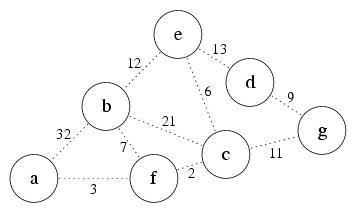
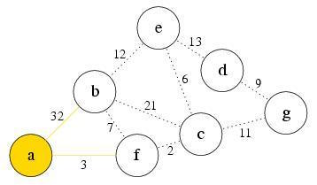
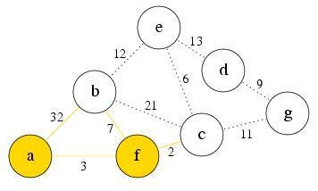
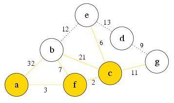
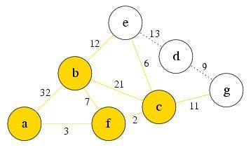
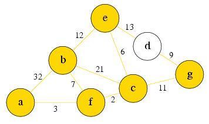
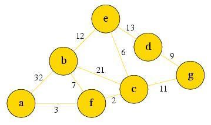

What is uniform-cost search?
Uniform-cost search (UCS) is a search algorithm that works on search graphs whose edges do not have the same cost. In the previous examples, we did not mention or define any edge costs. In doing so, we treated every node as having the same cost. The cost of an edge can be interpreted as a value or loss that occurs when that edge is traversed. Mathematically, a cost is just a scalar value associated with some edge, and graphs with non-uniform cost edges tend to have a cost for every edge. Such a graph is known as a weighted graph.
Instead of exploring nodes in order of their depth from the root, like what BFS does, UCS expands nodes in order of their cost from the root. At each step, the next step n is chosen to be the one that minimizes a cost value g(n). g(n) is defined as the total cost of getting to a node n from the current position. The nodes are stored in a priority queue.
Now let’s have an example to see how UCS works. Below is the graph we will traverse. Note that now each edge in the graph has its own cost value. We have a table to record the g(n) of each node in the graph and initialize all nodes’ g(n) to ∞ at first. We also have a priority queue PQ that records the nodes UCS will explore. Suppose the source node is node a. Just like BFS, we will explore the children of a node, push them into our priority queue PQ, and then pop the node out of PQ. We will decide which node to explore next based on which element in our queue has the smallest g(n) value. To facilitate this, we put nodes into PQ in ascending order of associated cost. After that node is explored, it is removed from the queue, and the process repeats.

PQ
| a | b | c | d | e | f | g |
|---|---|---|---|---|---|---|
| $$\infty$$ | $$\infty$$ | $$\infty$$ | $$\infty$$ | $$\infty$$ | $$\infty$$ | $$\infty$$ |
At first, there is only the node a reachable, put it into PQ and set its g(n) to 0
PQ: a
| a | b | c | d | e | f | g |
|---|---|---|---|---|---|---|
| 0 | $$\infty$$ | $$\infty$$ | $$\infty$$ | $$\infty$$ | $$\infty$$ | $$\infty$$ |
Explore the first node a, and find that b and f are reachable now. Push them into PQ and pop a from PQ. Node b’s $$g(n) = 32$$, Node f’s $$g(n) = 3$$, so we push them into PQ in the order f then b

PQ: f, b
| a | b | c | d | e | f | g |
|---|---|---|---|---|---|---|
| 0 | 32 | $$\infty$$ | $$\infty$$ | $$\infty$$ | 3 | $$\infty$$ |
Because node f has the smallest value, we explore it. Node c is the only new node. Recalculate g(n) for all nodes in PQ.
Since$$ af+fb = 3+7 = 10 < 32$$, node b’s $$g(n) = 10$$,
Node c’s $$g(n) = 3+2 = 5$$, and so we push c to the front of PQ.
We then remove f from PQ.

PQ: c, b
| a | b | c | d | e | f | g |
|---|---|---|---|---|---|---|
| 0 | 10 | 5 | $$\infty$$ | $$\infty$$ | 3 | $$\infty$$ |
Explore the first node c in PQ. Node e and g are reachable now. Since $$af+fc+cb = 3+2+21 = 26 > 10$$, node b’s g(n) doesn’t change, Node e’s $$g(n) = 3+2+6 = 11$$, Node g’s $$g(n) = 3+2+11 = 16$$ Push e and g into PQ, after b, and in that order. Remove c from PQ

PQ: b, e, g
| a | b | c | d | e | f | g |
|---|---|---|---|---|---|---|
| 0 | 10 | 5 | $$\infty$$ | 11 | 3 | 16 |
Explore the first node b in PQ. Nothing new is reachable, so nothing is added to PQ. Check if there’s any g(n) update for node e and g, and find that there is no change, so no elements are re-ordered. Remove b from PQ.

PQ: e, g
| a | b | c | d | e | f | g |
|---|---|---|---|---|---|---|
| 0 | 10 | 5 | $$\infty$$ | 11 | 3 | 16 |
Explore the first node e in PQ. Node d is reachable now. Node d’s $$g(n) = 3+2+6+13 = 24$$, no other node has an update in value, so push d into the tail end of PQ. Pop e from PQ.

PQ: g, d
| a | b | c | d | e | f | g |
|---|---|---|---|---|---|---|
| 0 | 10 | 5 | 24 | 11 | 3 | 16 |
Explore the first node g in PQ. No new node is reachable. Check if there’s any $$g(n)$$ updates, which there are not, so nothing is added or reordered. Remove g from PQ.
PQ: d
| a | b | c | d | e | f | g |
|---|---|---|---|---|---|---|
| 0 | 10 | 5 | 24 | 11 | 3 | 16 |
Explore the first node d in PQ. No new node is reachable, there are no updates. Push nothing into PQ, and then remove d from PQ.

PQ: d
| a | b | c | d | e | f | g |
|---|---|---|---|---|---|---|
| 0 | 10 | 5 | 24 | 11 | 3 | 16 |
PQ is empty now. UCS will be finished and every node reachable from source a is visited. Each node in the graph now also has its minimum path cost, as given by the final $$g(n)$$ value for each node.